    <style>
       header {
            border-bottom: 3px double #444;
            margin-bottom: 30px;
            padding-bottom: 20px;
            text-align: center;
        }

        header h1 {
            font-size: 1.8em;
            line-height: 1.3;
            margin-bottom: 10px;
        }

        header .meta {
            font-size: 0.9em;
            color: #555;
        }

        h2 {
            font-size: 1.4em;
            margin-top: 35px;
            margin-bottom: 15px;
            border-bottom: 1px solid #999;
            padding-bottom: 5px;
        }

        h3 {
            font-size: 1.15em;
            margin-top: 25px;
            margin-bottom: 12px;
        }

        p {
            margin-bottom: 15px;
            text-align: justify;
        }

        ul, ol {
            margin: 0 0 15px 25px;
        }

        li {
            margin-bottom: 6px;
        }

        figure {
            margin: 25px 0;
            text-align: center;
        }

        figure img {
            max-width: 100%;
            height: auto;
            display: block;
            margin: 0 auto;
            border: 1px solid #ccc;
            background: #f5f5f5;
        }

        figcaption {
            font-size: 0.9em;
            color: #555;
            margin-top: 8px;
            font-style: italic;
        }

        table {
            width: 100%;
            border-collapse: collapse;
            margin: 20px 0;
            font-size: 0.95em;
        }

        table, th, td {
            border: 1px solid #888;
        }

        th, td {
            padding: 8px 12px;
            text-align: left;
        }

        th {
            background-color: #eee;
        }

        .note-box {
            background: #fff8e1;
            border-left: 4px solid #f0a500;
            padding: 12px 15px;
            margin: 20px 0;
            font-size: 0.92em;
        }

        .policy {
            margin-top: 40px;
            padding: 15px;
            border: 1px solid #999;
            background: #f7f7f7;
            font-size: 0.85em;
            color: #444;
        }

        footer {
            margin-top: 40px;
            padding-top: 15px;
            border-top: 1px solid #ccc;
            font-size: 0.85em;
            color: #666;
            text-align: center;
        }

        @media (max-width: 600px) {
            body {
                padding: 12px;
            }
            header h1 {
                font-size: 1.4em;
            }
            h2 {
                font-size: 1.2em;
            }
            h3 {
                font-size: 1.05em;
            }
        }
    </style>
<header>
    <h1>Упрощённый тестовый стенд для характеристики операционных усилителей</h1>
    <div class="meta">
        National Semiconductor, Application Note 24 (AN-24)<br>
        Автор: М. Яматаке (M. Yamatake), апрель 1986 г.
    </div>
</header>

<main>

    <h2>ВВЕДЕНИЕ</h2>
    <p>Описанный в этом документе тестовый стенд позволяет быстро и с минимальным дополнительным оборудованием выполнить полную количественную характеристику всех параметров операционных усилителей постоянного тока. Используемый метод точен и одинаково подходит как для лабораторных, так и для производственных испытаний — для количественного считывания показаний или для предельного тестирования. В представленном варианте стенд настроен на тестирование усилителей LM709 и LM101; однако простые изменения, обсуждаемые в тексте, позволят тестировать любой из общедоступных операционных усилителей.</p>
    <p>Параметры усилителя тестируются во всём диапазоне синфазных напряжений и напряжений питания при одной из двух нагрузок на выходе. Чувствительность и стабильность стенда достаточны для тестирования всех имеющихся в настоящее время интегральных усилителей.</p>
    <p>Документ разделён на два раздела: функциональное описание и обсуждение работы схемы. Предоставлена полная информация по сборке, включая разводку печатной платы тестера.</p>

    <h2>ФУНКЦИОНАЛЬНОЕ ОПИСАНИЕ</h2>
    <p>Стенд работает в одном из трёх основных режимов:</p>
    <ol>
        <li>Тест тока смещения (Bias Current Test);</li>
        <li>Тест напряжения смещения и тока рассогласования (Offset Voltage, Offset Current Test);</li>
        <li>Тест передаточной функции (Transfer Function Test).</li>
    </ol>
    <p>В первых двух тестах тестируемый усилитель работает во всём своём диапазоне синфазных напряжений. Во всех трёх тестах напряжение питания тестируемой схемы может быть установлено на уровне ±5 В, ±10 В, ±15 В или ±20 В.</p>

    <h2>ИСТОЧНИК ПИТАНИЯ</h2>
    <p>Основные сигналы и рабочие напряжения постоянного тока для стенда формируются блоком питания, включающим положительные и отрицательные выпрямители с фильтрами, регулятор напряжения стенда, регулятор напряжения тестируемой схемы и генератор функций. Обсуждение источников постоянного тока будет приведено в разделе подробного описания схемы.</p>
    <p>Генератор сигналов обеспечивает три выходных сигнала: меандр ±19 В, импульсы от −19 В до +19 В со скважностью 1 % и треугольный сигнал ±5 В. Меандр является базовым сигналом, из которого формируются как импульсные, так и треугольные выходные сигналы.</p>
    <p>Генератор меандра представляет собой операционный усилитель, включённый как автоколебательный мультивибратор. Этот усилитель обеспечивает выходной сигнал приблизительно ±19 В на частоте 16 Гц. Этот меандр используется для управления полевыми транзисторными ключами в стенде и для формирования импульсного и треугольного сигналов.</p>
    <p>Генератор импульсов представляет собой ждущий мультивибратор, запускаемый выходным сигналом генератора меандра. Этому мультивибратору разрешено переключаться от отрицательного насыщения к положительному по переднему фронту входного меандра; постоянная времени обеспечивает скважность приблизительно 1 %. Выходной сигнал составляет приблизительно от −19 В до +19 В.</p>
    <p>Генератор треугольного сигнала представляет собой стабилизированный по постоянному току интегратор, управляемый выходом генератора меандра, и обеспечивает выходной сигнал ±5 В на частоте меандра, инвертированный относительно меандра.</p>
    <p>Назначение этих различных выходных сигналов блока питания будет обсуждаться в функциональном описании.</p>

    <figure>
        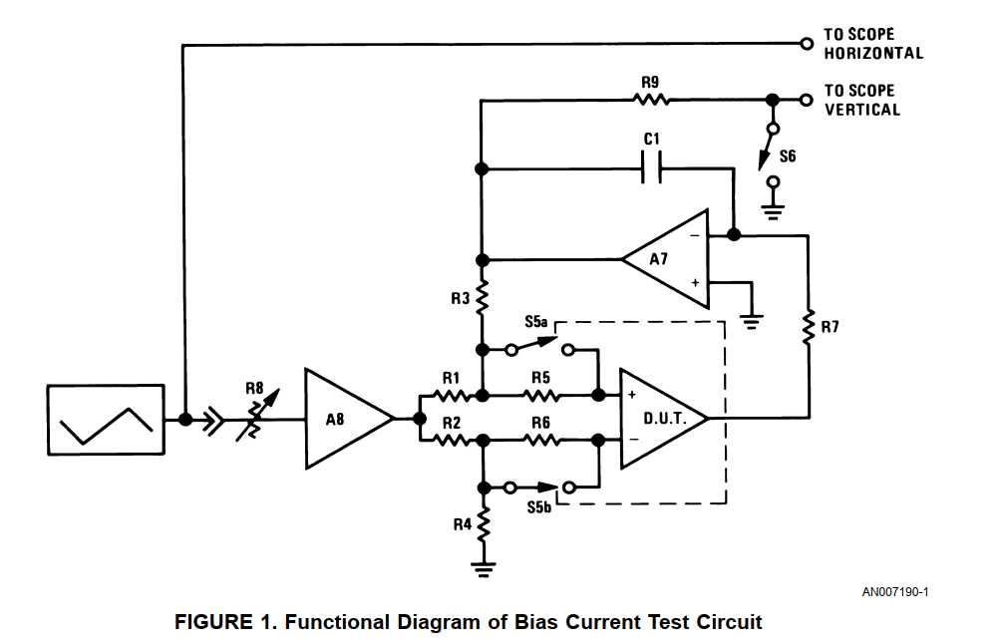
        <figcaption>РИСУНОК 1. Функциональная диаграмма схемы теста тока смещения</figcaption>
    </figure>

    <h2>ТЕСТ ТОКА СМЕЩЕНИЯ</h2>
    <p>Функциональная диаграмма схемы теста тока смещения показана на Рисунке 1. Выход генератора треугольного сигнала и выход тестируемой схемы управляют, соответственно, горизонтальным и вертикальным отклонением осциллографа.</p>
    <p>Тестируемое устройство (каскадно соединённое с интегратором A7) включено по схеме дифференциального усилителя на резисторах R1, R2, R3 и R4. Входы этого дифференциального усилителя управляются синфазно с выхода генератора треугольного сигнала через аттенюатор R8 и усилитель A8. Входы тестируемого устройства подключены к цепи обратной связи через резисторы R5 и R6, шунтированные ключами S5a и S5b.</p>
    <p>Цепь обратной связи обеспечивает коэффициент усиления замкнутого контура 1000, а постоянная времени интегратора служит для снижения шума на выходе тестовой схемы и одновременно позволяет выходу тестируемого устройства оставаться вблизи нуля вольт.</p>
    <p>Тест тока смещения выполняется путём разрешения тестируемому устройству потреблять входной ток на одном из своих входов через соответствующий входной резистор на положительной или отрицательной полуволне выходного сигнала генератора треугольного сигнала.</p>
    <p>Это достигается замыканием S5a или S5b на чередующихся полупериодах треугольного входного сигнала. Напряжение на входном резисторе равно произведению входного тока на сопротивление входного резистора. Это напряжение умножается на 1000 петлёй обратной связи и появляется на выходе интегратора и вертикальном входе осциллографа. Вертикальное расстояние между трассами, представляющими два входных тока тестируемого усилителя, эквивалентно полному току смещения тестируемого усилителя.</p>
    <p>Ток смещения во всём диапазоне синфазных напряжений может быть исследован путём установки выхода A8 равным диапазону синфазных напряжений усилителя. Фотография изображения тока смещения на осциллографе приведена на Рисунке 2. На этом рисунке полный входной ток усилителя отображается в диапазоне синфазных напряжений ±10 В с чувствительностью 100 нА на вертикальное деление.</p>
    <p>Изображение тока смещения на Рисунке 2 имеет дополнительное преимущество — легко обнаруживается начинающийся пробой входного каскада тестируемого устройства на краях диапазона синфазных напряжений.</p>
    <p>Если любая или обе трассы (верхняя или нижняя) на изображении тока смещения проявляют кривизну вблизи горизонтальных краёв экрана осциллографа, это показывает, что ток смещения данного входа усилителя зависит от синфазного напряжения. Обычными причинами этой зависимости являются низкое напряжение пробоя дифференциального входного каскада или токового стока.</p>

    <h2>ТЕСТ НАПРЯЖЕНИЯ СМЕЩЕНИЯ И ТОКА РАССОГЛАСОВАНИЯ</h2>
    <p>Тесты напряжения смещения и тока рассогласования выполняются в целом так же, как тест тока смещения. Единственное отличие состоит в том, что ключи S5a и S5b замыкаются на одном и том же полупериоде треугольного входного сигнала.</p>
    <p>Синхронная работа S5a и S5b заставляет тестируемый усилитель потреблять свои входные токи через согласованные высокий и низкий входные резисторы на чередующихся полупериодах входного треугольного сигнала. Разность между падениями напряжения на двух значениях входных резисторов пропорциональна разности входных токов на двух входах тестируемого усилителя и может быть измерена как вертикальное расстояние между двумя трассами, появляющимися на экране осциллографа.</p>
    <p>Напряжение смещения измеряется как вертикальное расстояние между трассой, соответствующей одному из двух значений сопротивления источника, и базовой линией нулевого напряжения. Ключ S6 и резистор R9 образуют прерыватель базовой линии, назначение которого — обеспечить базовую линию, не зависящую от дрейфа стенда и осциллографа. S6 управляется импульсным выходом генератора функций и имеет скважность приблизительно 1 % от треугольного сигнала.</p>
    <p>Рисунок 3 представляет фотографию различных сигналов, отображаемых во время этого теста. Напряжение смещения и ток рассогласования отображаются с чувствительностью 1 мВ и 100 нА на деление соответственно, и оба параметра отображаются в диапазоне синфазных напряжений ±10 В.</p>

    <figure>
        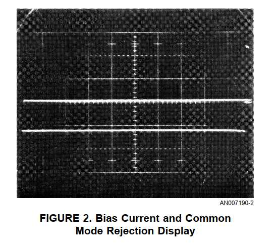
        <figcaption>РИСУНОК 2. Отображение тока смещения и ослабления синфазного сигнала</figcaption>
    </figure>

    <figure>
        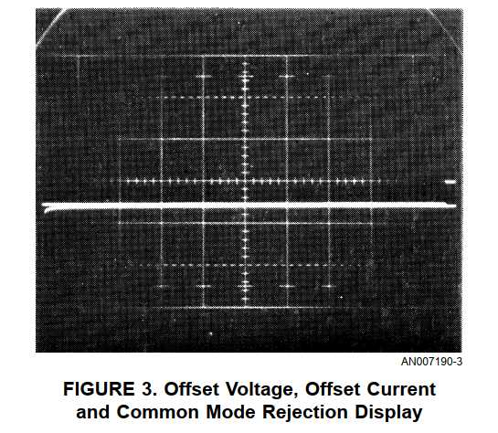
        <figcaption>РИСУНОК 3. Отображение напряжения смещения, тока рассогласования и ослабления синфазного сигнала</figcaption>
    </figure>

    <h2>ТЕСТ ПЕРЕДАТОЧНОЙ ФУНКЦИИ</h2>
    <p>Функциональная диаграмма теста передаточной функции показана на Рисунке 4. Выход генератора треугольного сигнала и выход тестируемой схемы управляют, соответственно, горизонтальным и вертикальным входами осциллографа.</p>
    <p>Тестируемое устройство управляется треугольным сигналом ±2,5 мВ, полученным из выхода ±5 В генератора треугольного сигнала через аттенюаторы R11, R12 и R1, R3 и через повторитель напряжения A7. Выход тестируемого устройства подаётся на вертикальный вход осциллографа.</p>
    <p>Усилитель A7 выполняет двойную функцию в этом тесте. Когда S7 замкнут во время теста тока смещения, на C1 формируется напряжение, равное напряжению смещения усилителя, умноженному на коэффициент усиления петли обратной связи. Когда S7 разомкнут в тесте передаточной функции, заряд, накопленный на C1, продолжает обеспечивать это корректирующее напряжение смещения. Кроме того, A7 суммирует треугольный тестовый сигнал с корректирующим напряжением смещения и подаёт эту сумму на вход тестируемого усилителя через аттенюатор R1, R3. Этот входной сигнал развёртывает вход тестируемого усилителя на ±2,5 мВ вокруг его напряжения смещения.</p>
    <p>Рисунок 5 представляет фотографию выхода стенда во время теста передаточной функции. Этот рисунок иллюстрирует функцию усилителя A7 по регулировке постоянного входного уровня тестируемого устройства так, чтобы его передаточная функция отображалась в центре экрана осциллографа.</p>
    <p>Отображение передаточной функции представляет собой график V<sub>IN</sub> относительно V<sub>OUT</sub> для усилителя. Это отображение предоставляет информацию о трёх параметрах усилителя: коэффициенте усиления, линейности усиления и размахе выходного сигнала.</p>
    <p>Коэффициент усиления отображается как наклон ΔV<sub>OUT</sub>/ΔV<sub>IN</sub> передаточной функции. Линейность усиления определяется изменением наклона отображения V<sub>OUT</sub>/V<sub>IN</sub> в зависимости от выходного напряжения. Это отображение особенно полезно для обнаружения искажений типа «ступенька» в выходном каскаде класса B. Размах выходного сигнала измеряется как вертикальное отклонение передаточной функции на горизонтальных краях отображения.</p>

    <figure>
        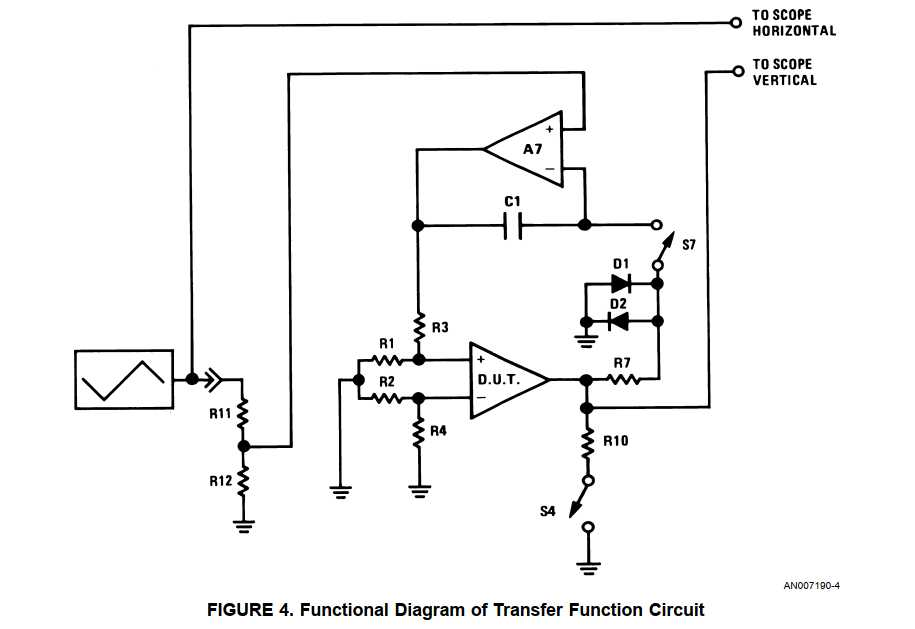
        <figcaption>РИСУНОК 4. Функциональная диаграмма схемы передаточной функции</figcaption>
    </figure>

    <figure>
        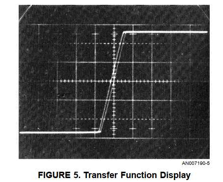
        <figcaption>РИСУНОК 5. Отображение передаточной функции</figcaption>
    </figure>

    <h2>ПОДРОБНОЕ ОПИСАНИЕ СХЕМЫ</h2>

    <h3>ИСТОЧНИКИ ПИТАНИЯ</h3>
    <p>Как показано на Рисунке 6, представляющем полную принципиальную схему источника питания и генератора функций, в стенде предусмотрены два источника питания. Один обеспечивает фиксированные ±20 В для питания схем стенда; другой обеспечивает от ±5 В до ±20 В для питания тестируемой схемы.</p>
    <p>Регулятор питания стенда принимает +28 В от положительного выпрямителя с фильтром и обеспечивает +20 В через положительный стабилизатор LM100. Усилитель A1 питается от отрицательного выпрямителя с фильтром и работает как инвертор с единичным коэффициентом усиления, вход которого подключён к +20 В от положительного стабилизатора, а выход составляет −20 В.</p>
    <p>Источник питания тестируемой схемы привязан к выходу +20 В положительного стабилизатора через регулируемый делитель на R7, R8, R9, R10 и R26. Выход этого делителя составляет от +10 В до +2,5 В в зависимости от положения S2a и подаётся на неинвертирующий усилитель A2 с коэффициентом усиления 2. A2 питается от +28 В и обеспечивает от +20 В до +5 В на выходе. A3 представляет собой инвертор с единичным коэффициентом усиления, вход которого подключён к выходу A2 и который питается от −28 В. Комплементарные выходы усилителей A2 и A3 обеспечивают питание постоянного тока для тестируемой схемы.</p>
    <p>В качестве A2 и A3 используются усилители LM101, что позволяет работать от одного привязанного к земле напряжения каждый и обеспечивает защитное ограничение тока для тестируемого устройства.</p>

    <figure>
        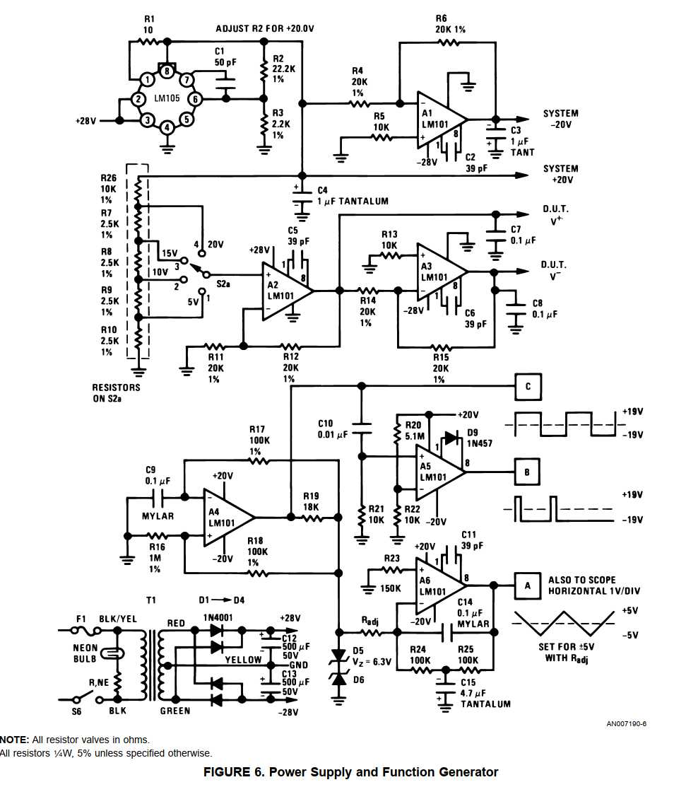
        <figcaption>РИСУНОК 6. Источник питания и генератор функций.<br>
        Примечание: все сопротивления в омах. Все резисторы ¼ Вт, 5 %, если не указано иное.</figcaption>
    </figure>

    <h3>ГЕНЕРАТОР ФУНКЦИЙ</h3>
    <p>Генератор функций обеспечивает три выходных сигнала: меандр ±19 В, импульсы от −19 В до +19 В со скважностью 1 % и треугольный сигнал ±5 В. Меандр является базовой функцией, из которой формируются импульсный и треугольный сигналы; импульс привязан к переднему фронту меандра, а треугольный сигнал является инвертированным и проинтегрированным меандром.</p>
    <p>Усилитель A4 представляет собой автоколебательный мультивибратор, генерирующий меандр от положительного до отрицательного насыщения. Амплитуда этого меандра составляет приблизительно ±19 В. Частота меандра определяется отношением R18 к R16 и постоянной времени R17C9. Рабочая частота стабилизирована против температурных эффектов и эффектов регулирования питания путём регулирования сигнала обратной связи делителем R19, D5 и D6.</p>
    <p>Усилитель A5 представляет собой ждущий мультивибратор, запускаемый положительным перепадом выхода A4. Ширина импульса A5 определяется отношением R20 к R22 и постоянной времени R21C10. Выходной импульс A5 представляет собой импульс со скважностью приблизительно 1 % от приблизительно −19 В до +19 В.</p>
    <p>Усилитель A6 представляет собой стабилизированный по постоянному току интегратор, управляемый стабилизированным по амплитуде выходом A4. Его выходом является треугольный сигнал ±5 В. Амплитуда выхода A6 определяется напряжением меандра на D5 и D6 и постоянной времени R<sub>adj</sub> C14. Стабилизация по постоянному току обеспечивается цепью обратной связи R24, R25 и C15. Затухание этой цепи обратной связи по переменному току достаточно велико, чтобы не ухудшать интегрирование на частоте меандра.</p>
    <p>Рабочая частота генератора функций может быть изменена путём изменения постоянных времени, связанных с A4, A5 и A6, в одинаковом отношении.</p>

    <h3>ТЕСТОВАЯ СХЕМА</h3>
    <p>Полная принципиальная схема тестовой схемы показана на Рисунке 7. Тестовая схема принимает выходы источников питания и генератора функций и обеспечивает горизонтальный и вертикальный выходы для X-Y осциллографа, который используется как измерительная система.</p>
    <p>Основными элементами тестовой схемы являются буфер обратной связи и интегратор на усилителе A7 с цепью обратной связи C16, R31, R32 и C17, а также сеть дифференциального усилителя, включающая тестируемое устройство и цепь обратной связи R40, R43, R44 и R52. Остальная часть тестовой схемы обеспечивает соответствующую подготовку тестируемого устройства и масштабирование для осциллографа, на котором отображаются результаты теста.</p>
    <p>Усилитель A8 обеспечивает источник синфазного сигнала переменной амплитуды для работы тестируемого усилителя во всём диапазоне синфазных напряжений. Этот усилитель включён как неинвертирующий усилитель с коэффициентом усиления 3,6 и получает входной сигнал от генератора треугольного сигнала. Потенциометр R37 позволяет изменять выход этого усилителя от ±0 В до ±18 В. Выход этого усилителя управляет дифференциальными входными резисторами R43 и R44 тестируемого устройства.</p>
    <p>Резисторы R46 и R47 представляют собой токоизмерительные резисторы, которые измеряют входной ток тестируемого устройства. Эти резисторы подключаются к схеме в правильной последовательности полевыми транзисторами Q6 и Q7. Q6 и Q7 управляются от меандра генератора функций через пару PNP Q10 и Q11 и пару NPN Q8 и Q9.</p>
    <p>Секции переключателя S1b и S1c выбирают последовательность переключения Q8 и Q9 и, следовательно, Q6 и Q7. В тесте тока смещения драйверы полевых транзисторов Q8 и Q9 переключаются противофазными сигналами от Q10 и Q11. Это размыкает полевые ключи Q6 и Q7 на чередующихся полупериодах меандра генератора функций. В тесте напряжения смещения и тока рассогласования драйверы полевых транзисторов работают синхронно от выхода Q11. В тесте передаточной функции Q6 и Q7 включены постоянно путём выключения Q11. R42 и R45 поддерживают затворы полевых ключей при нулевом напряжении затвор-исток для максимальной проводимости во время включённого цикла. Поскольку истоки этих ключей находятся на синфазном входном напряжении тестируемого устройства, эти резисторы подключены к выходу усилителя-драйвера синфазного сигнала A8.</p>
    <p>Вход интегратора-буфера обратной связи A7 выбирается полевыми ключами Q4 и Q5. Во время тестов тока смещения и напряжения/тока рассогласования A7 включён как интегратор и принимает входной сигнал с выхода тестируемого устройства. Выход A7 управляет резистором обратной связи R40. В этом включении интегратор удерживает выход тестируемого устройства вблизи земли и служит для усиления напряжений, соответствующих току смещения, току рассогласования и напряжению смещения, в 1000 раз перед подачей их на измерительную систему. Полевые ключи Q4 и Q5 включаются секцией переключателя S1b во время этих тестов.</p>
    <p>Полевые ключи Q4 и Q5 выключаются во время теста передаточной функции. Это отключает A7 от выхода тестируемого устройства и переводит его из интегратора в неинвертирующий усилитель с единичным коэффициентом усиления, управляемый от треугольного выхода генератора функций через аттенюатор R33 и R34 и секцию переключателя S1a. В этом включении усилитель A7 выполняет две функции: во-первых, обеспечивает коррекцию напряжения смещения на входе тестируемого устройства, и, во-вторых, управляет входом тестируемого устройства треугольным сигналом ±2,5 мВ, центрированным вокруг напряжения смещения. Во время этого теста усилитель-драйвер синфазного сигнала отключается секцией переключателя S1a, а вертикальный вход измерительного осциллографа переключается с выхода интегратора-буфера A7 на выход тестируемого устройства секцией переключателя S1d. S2a позволяет устанавливать напряжения питания тестируемого устройства на уровне ±5, ±10, ±15 или ±20 В. S2b изменяет коэффициент вертикального масштаба для измерительного осциллографа для поддержания оптимального вертикального отклонения для используемого напряжения питания. S4 представляет собой кнопочный переключатель без фиксации, который используется для изменения нагрузки тестируемого устройства с 10 кОм на 2 кОм.</p>
    <p>При переключении от входных тестов к тестам передаточной функции должна быть предусмотрена задержка. Цель этой задержки — отключить функцию интегратора A7 перед тем, как управлять им с помощью треугольного сигнала. Если этого не сделать, корректирующее напряжение смещения, накопленное на C16, будет потеряно. Эта задержка между размыканием полевого ключа Q4 и ключа Q5 обеспечивается RC-фильтром R35 и C19.</p>
    <p>Резистор R41 и диоды D7 и D8 предусмотрены для управления интегратором, когда тестируемое устройство отсутствует или когда вставлено неисправное тестируемое устройство. R41 обеспечивает путь обратной связи по постоянному току в отсутствие тестируемого устройства и сбрасывает интегратор в ноль. Диоды D7 и D8 ограничивают вход интегратора приблизительно ±0,7 В при вставке неисправного устройства.</p>
    <p>Полевой ключ Q1 и резистор R28 обеспечивают привязку к земле в начале трассы напряжения смещения с 50-омным источником. Эта трасса обеспечивает привязку к земле, не зависящую от калибровки приборов или осциллографа. Затвор Q1 управляется выходом ждущего мультивибратора A5 и замыкает сигнал вертикального управления осциллографа на землю в течение времени, когда выход A5 положителен.</p>
    <p>Переключатель S3, R27 и R28 обеспечивают увеличение масштаба в 5 раз во время тестов входных параметров, чтобы позволить измерение усилителей с большим напряжением смещения, током рассогласования или током смещения.</p>
    <p>Переключатель S5 позволяет изменять компенсацию усилителя для усилителей типа 101 или 709.</p>

    <figure>
        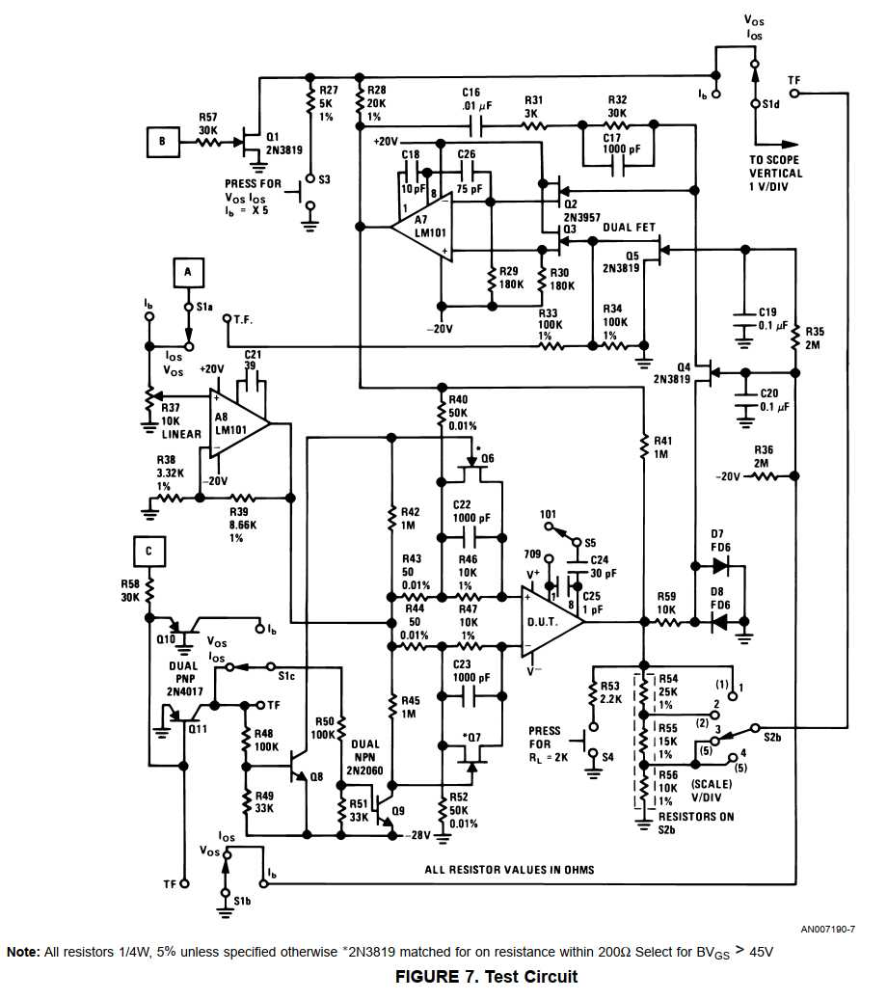
        <figcaption>РИСУНОК 7. Тестовая схема.<br>
        Примечание: все резисторы ¼ Вт, 5 %, если не указано иное. *2N3819 согласованы по сопротивлению в открытом состоянии в пределах 200 Ом. Отбирать с BV<sub>GS</sub> &gt; 45 В.</figcaption>
    </figure>

    <h3>КАЛИБРОВКА</h3>
    <p>Калибровка тестовой системы относительно проста и требует только двух регулировок. Сначала на выходе основного стабилизатора устанавливается 20 В. Затем генератор треугольного сигнала регулируется для обеспечения выхода ±5 В выбором R<sub>adj</sub>. Это устанавливает горизонтальную развёртку для X-Y осциллографа, используемого как измерительная система. Затем осциллограф устанавливается на 1 В/деление по вертикали и полную развёртку 10 делений по горизонтали.</p>
    <p>Коэффициенты масштаба для трёх положений тестирования:</p>
    <ol>
        <li><strong>Отображение тока смещения</strong> (Рисунок 2):
            <ul>
                <li>Полный ток смещения: 100 нА/деление по вертикали</li>
                <li>Синфазное напряжение: переменное по горизонтали</li>
            </ul>
        </li>
        <li><strong>Напряжение смещения — ток рассогласования</strong> (Рисунок 3):
            <ul>
                <li>Ток рассогласования: 100 нА/деление по вертикали</li>
                <li>Напряжение смещения: 1 мВ/деление по вертикали</li>
                <li>Синфазное напряжение: переменное по горизонтали</li>
            </ul>
        </li>
        <li><strong>Передаточная функция</strong> (Рисунок 5):
            <ul>
                <li>V<sub>IN</sub>: 0,5 мВ/деление</li>
                <li>V<sub>OUT</sub>: 5 В/деление при V<sub>s</sub> ±20 В; 5 В/деление при V<sub>s</sub> ±15 В; 2 В/деление при V<sub>s</sub> ±10 В; 1 В/деление при V<sub>s</sub> ±5 В</li>
            </ul>
        </li>
    </ol>

    <h3>КОНСТРУКЦИЯ</h3>
    <p>Конструкция стенда упрощена благодаря использованию интегральных схем и разводки печатной платы.</p>
    <p>Рисунки 8, 9 и 10 представляют фотографии собранного тестера.</p>
    <p>Рисунок 11 показывает расположение деталей для компонентов на разводке печатной платы Рисунка 12. Следует стремиться придерживаться этой разводки, чтобы гарантировать, что паразитная связь между элементами не вызовет колебаний или проблем с калибровкой.</p>
    <p>Таблица 1 представляет собой список специальных компонентов, необходимых для соответствия физической разводке, приведённой для тестера.</p>

    <table>
        <caption><strong>ТАБЛИЦА 1. Частичный список деталей</strong></caption>
        <thead>
            <tr>
                <th>Обозначение</th>
                <th>Компонент</th>
            </tr>
        </thead>
        <tbody>
            <tr>
                <td>T1</td>
                <td>Triad F-90X</td>
            </tr>
            <tr>
                <td>S1</td>
                <td>Centralab PA2003, без замыкания (non-shorting)</td>
            </tr>
            <tr>
                <td>S2</td>
                <td>Centralab PA2015, без замыкания (non-shorting)</td>
            </tr>
            <tr>
                <td>S3, S4</td>
                <td>Grayhill 30-1 Series 30, миниатюрный кнопочный переключатель</td>
            </tr>
            <tr>
                <td>S5, S6</td>
                <td>Alcoswitch MST-105D, SPDT</td>
            </tr>
        </tbody>
    </table>

    <figure>
        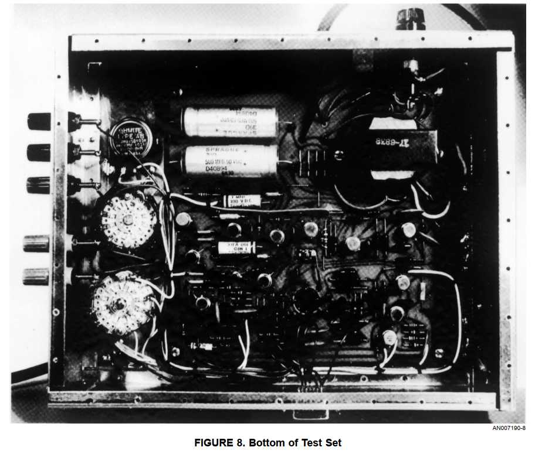
        <figcaption>РИСУНОК 8. Вид тестера снизу</figcaption>
    </figure>

    <figure>
        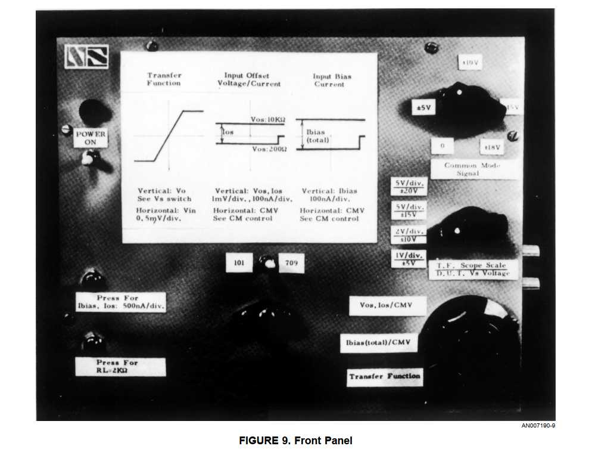
        <figcaption>РИСУНОК 9. Передняя панель</figcaption>
    </figure>

    <figure>
        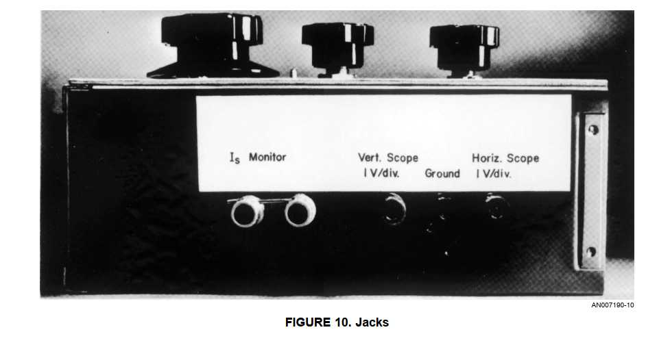
        <figcaption>РИСУНОК 10. Разъёмы</figcaption>
    </figure>

    <figure>
        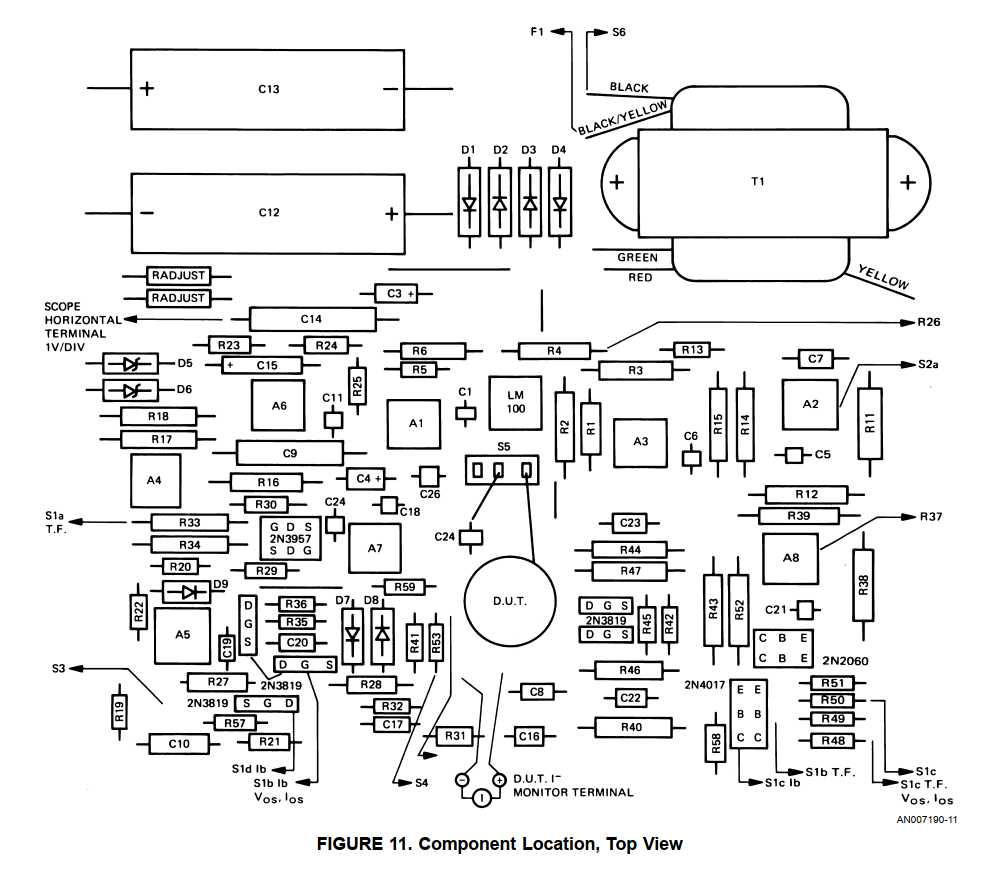
        <figcaption>РИСУНОК 11. Расположение компонентов, вид сверху</figcaption>
    </figure>

    <figure>
        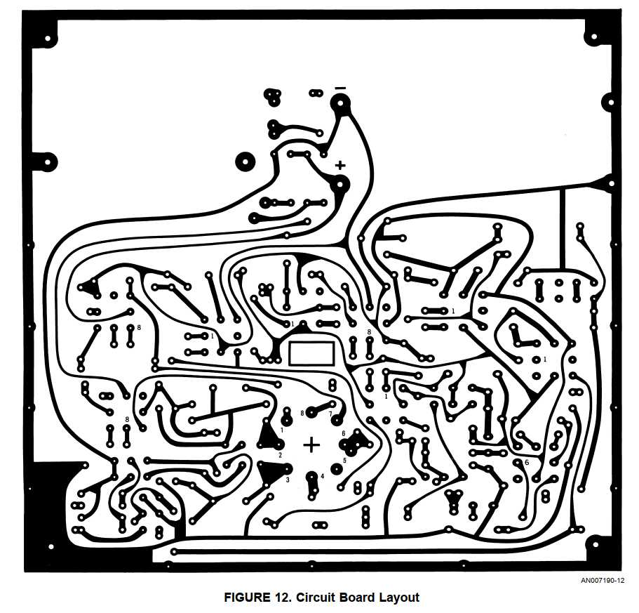
        <figcaption>РИСУНОК 12. Разводка печатной платы</figcaption>
    </figure>

    <h2>ЗАКЛЮЧЕНИЕ</h2>
    <p>Описана полуавтоматическая тестовая система, которая полностью тестирует важные параметры операционных усилителей во всём диапазоне напряжений питания и синфазных напряжений.</p>
    <p>Система проста, недорога, легко калибруется и одинаково подходит как для инженерного применения, так и для контроля качества.</p>

    <div class="policy">
        <h3>ПОЛИТИКА В ОТНОШЕНИИ СИСТЕМ ЖИЗНЕОБЕСПЕЧЕНИЯ</h3>
        <p>ПРОДУКЦИЯ NATIONAL НЕ АВТОРИЗОВАНА ДЛЯ ИСПОЛЬЗОВАНИЯ В КАЧЕСТВЕ КРИТИЧЕСКИХ КОМПОНЕНТОВ В УСТРОЙСТВАХ ИЛИ СИСТЕМАХ ЖИЗНЕОБЕСПЕЧЕНИЯ БЕЗ ПРЯМОГО ПИСЬМЕННОГО РАЗРЕШЕНИЯ ПРЕЗИДЕНТА NATIONAL SEMICONDUCTOR CORPORATION.</p>
        <p>Используемые здесь определения:</p>
        <ol>
            <li>Устройства или системы жизнеобеспечения — это устройства или системы, которые (a) предназначены для хирургической имплантации в тело, или (b) поддерживают или обеспечивают жизнедеятельность, и чей отказ выполнять свои функции при правильном использовании в соответствии с инструкциями по применению, приведёнными в маркировке, может обоснованно привести к значительной травме пользователя.</li>
            <li>Критический компонент — любой компонент устройства или системы жизнеобеспечения, чей отказ выполнять свои функции может обоснованно привести к отказу устройства или системы жизнеобеспечения или повлиять на их безопасность или эффективность.</li>
        </ol>
    </div>

    <div class="note-box">
        <p><em>Примечание из оригинального документа:</em> National не несёт ответственности за использование любых описанных схем, не подразумевается выдача лицензий на патенты на схемы, и National оставляет за собой право в любое время без уведомления изменять указанные схемы и спецификации.</p>
    </div>

</main>

<footer>
    <p>National Semiconductor Corporation — Application Note AN-24<br>
    Original Publication Date: April 1986 | Print Date: 1998/04/24<br>
    Перевод на русский язык выполнен для ознакомительных целей.</p>
</footer>
